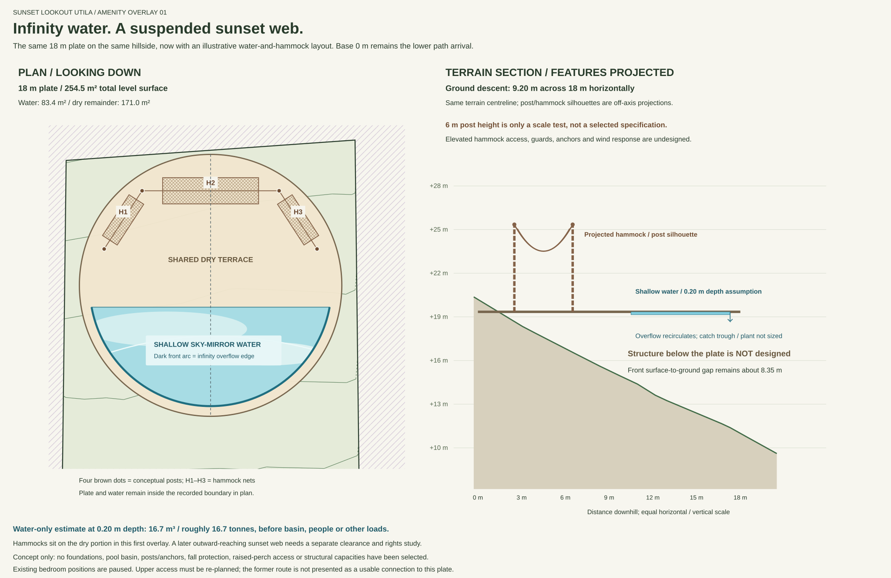
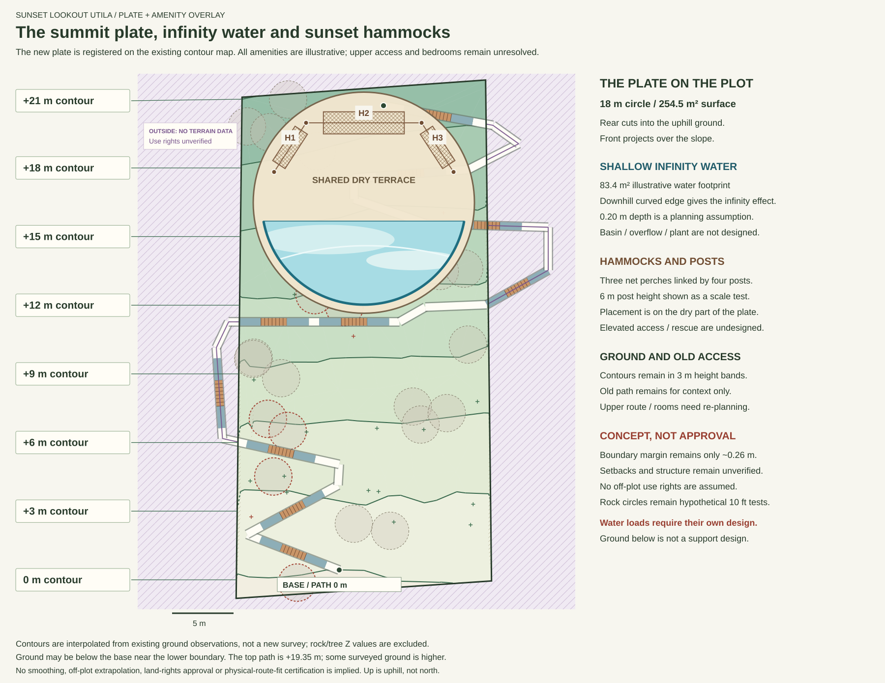
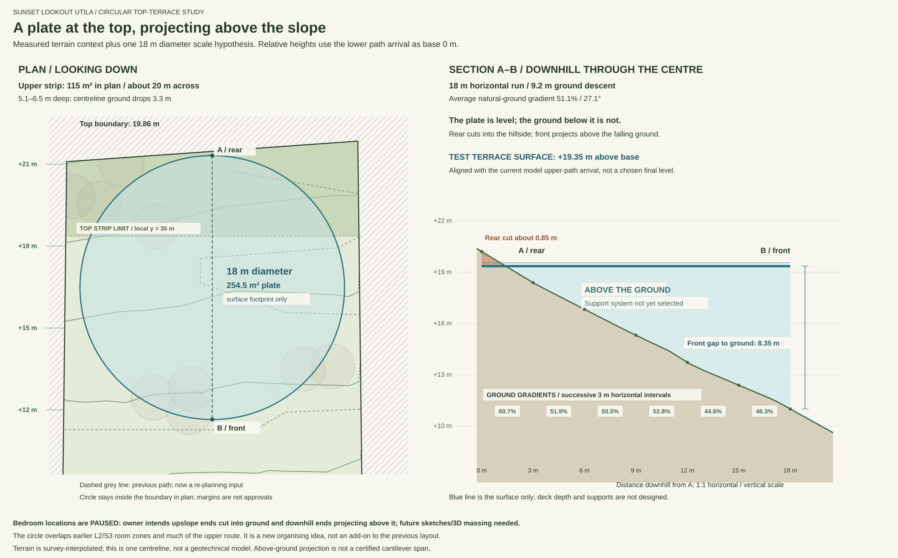
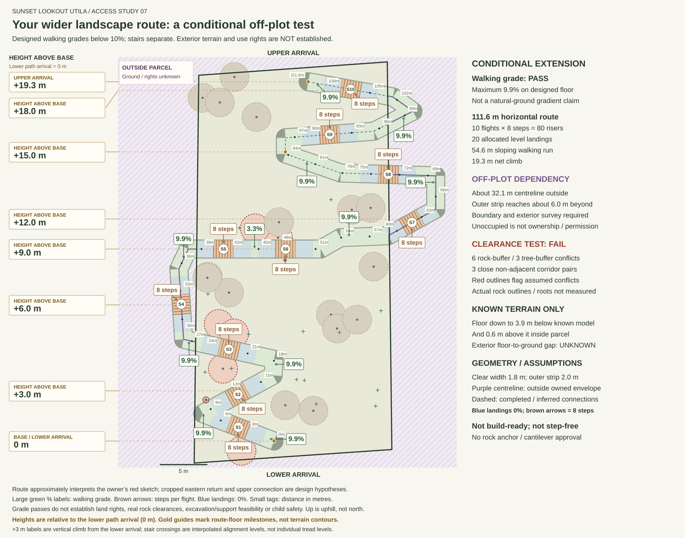
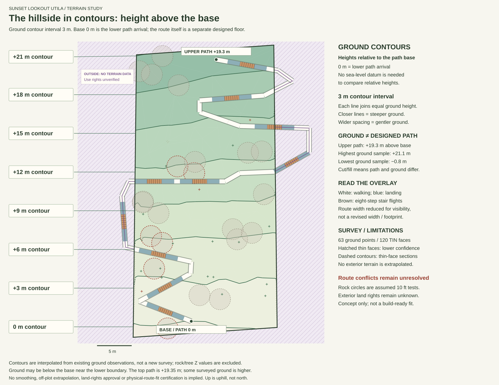
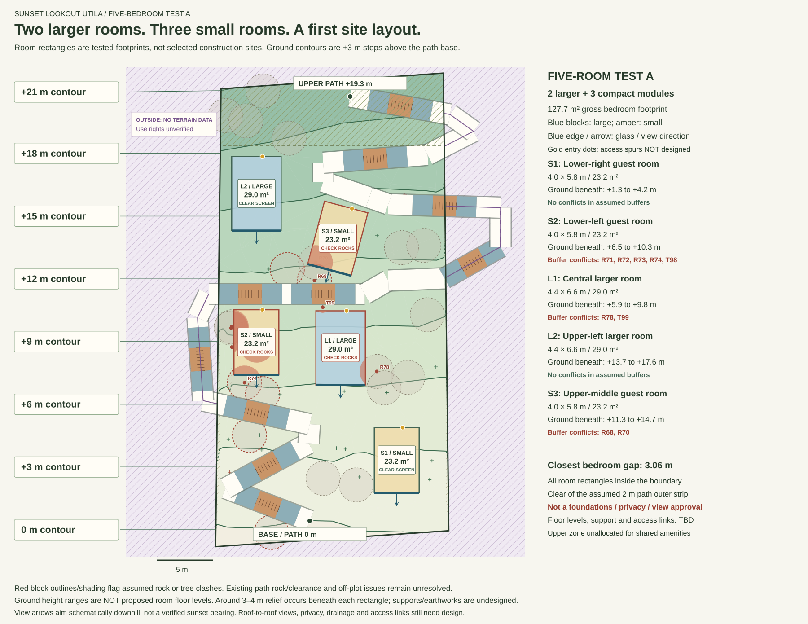
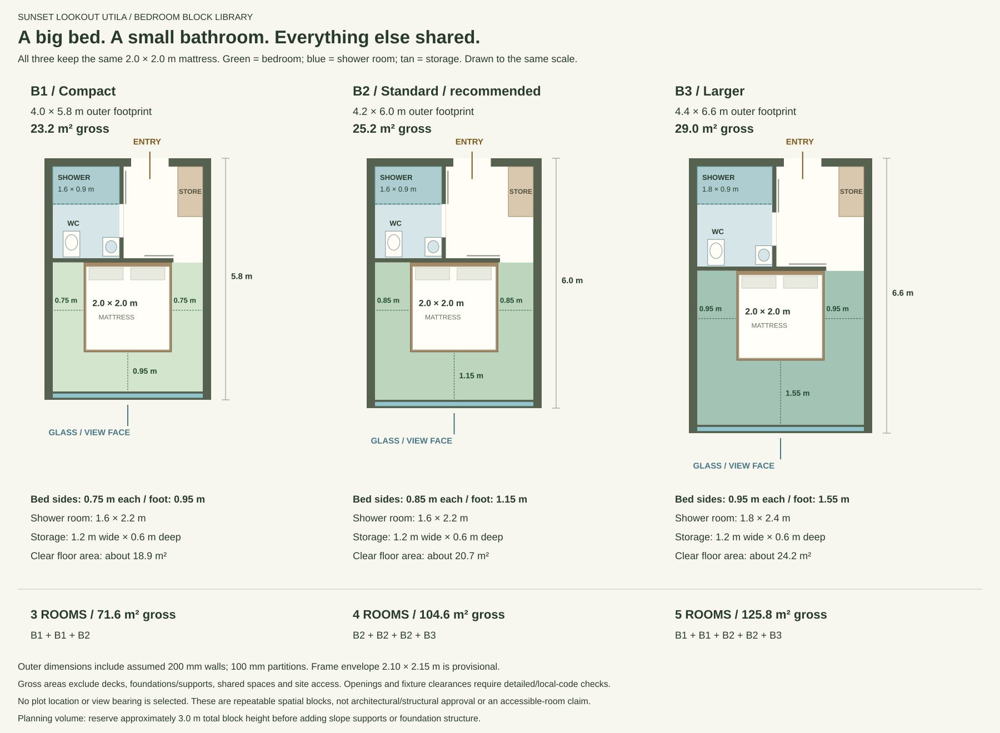
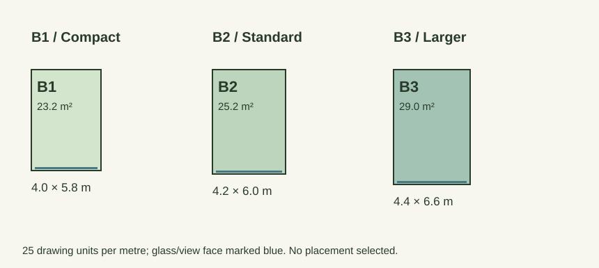
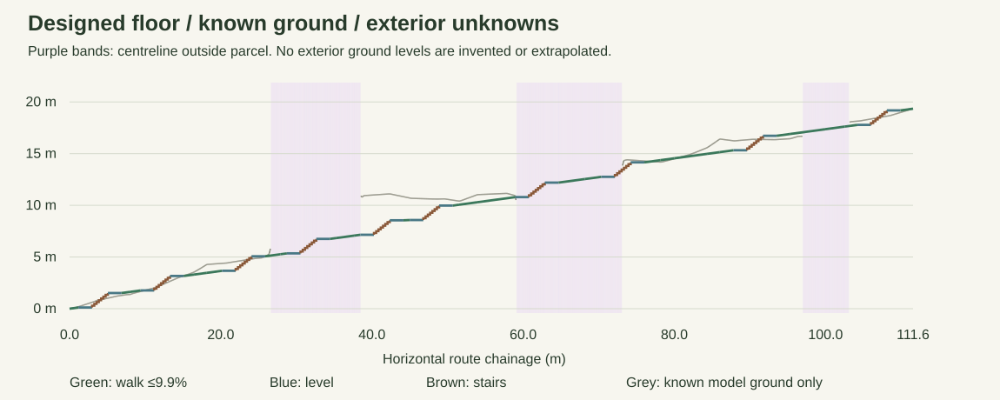
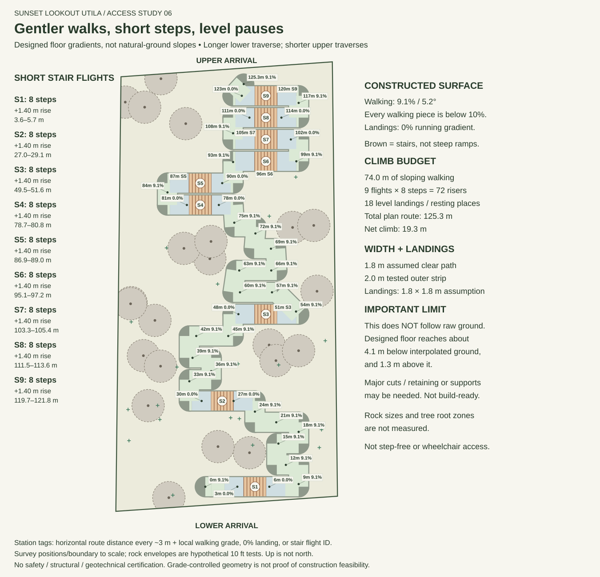

Top-terrace concept / survey plan + centreline section
A circular terrace.
Above the hillside.
Current focus: a large circular plate near the summit, cut into the upslope ground and projecting over the falling hillside. The top strip is about 115 m² in plan, not a flat pad. An 18 m diameter, 254.5 m² surface is a scale test, not engineered approval. Bedroom positions are paused until the owner supplies sketches; earlier path and module workings remain below.
New concept overlay / infinity water + sunset web
The plate, with water and hammocks.
A first amenity arrangement on the same measured 18 m plate: shallow sky-mirror water along the downhill arc, plus three suspended net perches between four posts on the dry terrace. The 0.20 m water depth and 6 m posts are illustrative scale choices, not approved specifications. Elevated access, anchors, fall protection and the plate structure remain undesigned.
Swipe across to see the section, or open it full size.

See the plate, water and hammocks on the whole plot
Swipe across the full-site plan, or open it full size.

Download amenity geometry and assumptions. The original measured terrace and previous drawings remain below.
Swipe across to see the section, or open the drawing full size.

Inspect the terrace assumptions and paused bedroom brief
Owner intent: bedrooms have rear/upslope ends dug into the hillside and front/downhill ends projecting above ground. Flat footprint diagrams cannot show this. Bedroom positions are paused pending owner drawings; a proper terrain/building 3D model and sections are needed before refining them.
The plate is a level organising surface for a later shared-space/building/pool study, not an approved lightweight cantilever. The 18 m circle fits the boundary mathematically but has only about 0.26 m at its tightest boundary margin, before construction/setback allowances. Its plan overlaps earlier L2 and S3 bedroom footprints and much of the upper path, which require re-planning.
+19.35 m is a comparison level aligned with the current model upper-path arrival, not a selected floor. The centreline is local x = 0 only; cross-slope conditions differ. Deck depth, cut/support volumes, anchorage, foundations and drainage are not designed. Projection above terrain is not unsupported cantilever length.
Swipe across the plan, or open it full size.

View the hillside with 3 m ground contours above base level

Five-bedroom test A / two larger and three compact
Earlier bedroom placement: paused
Owner clarification: rooms are intended to cut into the upslope ground and project downhill. This footprint-only test is retained as history, not a selected arrangement; owner drawings and a 3D terrain/massing study come next.

Inspect the five room positions and limitations
Blue blocks are B3 larger rooms, amber blocks B1 compact rooms. Glass/view arrows point schematically downhill, not to a verified sunset bearing. Gold entry dots do not establish access links. The terrain changes by approximately 3–4 m beneath each rectangle; structural floors, earthworks, foundations, connecting paths and 3D views/privacy remain undesigned. The original path clearance failures and off-plot rights questions remain.
S1 lower-right and L2 upper-left are the strongest initial buffer-clear slots. S2 lower-left, L1 central and S3 upper-middle need resolution of the visible rock/tree conflicts. Search is bounded to sampled positions, not proof these are globally optimal locations or a five-room design is impossible.
Reusable room footprints / no plot placement selected
Bedroom LEGO blocks

See reusable bedroom footprint stamps

Geometry uses 25 SVG drawing units per metre, matching the contour data. Images can be resized differently on screen; use the dimension data or original SVG geometry for placement, not apparent screenshot size.
The 2 × 2 m mattress is a deliberately large planning choice; B&Q describes this size as an emperor bed. A 1.6 × 2.2 m shower room is a compact concept, within Joyce Kitchens' compact ensuite planning range, not local regulatory certification. A 2.10 × 2.15 m frame, 200 mm exterior walls and 100 mm partitions are assumptions; actual products and structure may enlarge the block.
Separate tests, separate answers
Grade can pass.
Full fit does not yet pass.
- Maximum designed walking grade
- 9.9%
- Horizontal route / net rise
- 111.6 m / 19.3 m
- Sloping walking run
- 54.6 m
- Stair flights / steps overall
- 10 × 8 / 80
- Allocated level landings
- 20
- Centreline outside parcel
- approximately 32.1 m
- Outer strip's maximum reach beyond boundary
- approximately 6.0 m
Every flight uses assumed 175 mm risers, seven 300 mm treads and an assumed 1.8 × 1.8 m level landing at each end. Stairs are not claimed to be below 10%. The assumed clear path is 1.8 m with a 2.0 m outer strip; construction supports, guard details and smoothed turn footprints are not yet fitted.
The interpretation includes modest adjustments to the lower turn and assistant-inferred eastern return/upper completion. It is not an exact georeferenced tracing of every red pixel, and it does not assume all unshown external land is available.
Exterior terrain is deliberately left unknown

Inside the parcel, the designed floor reaches approximately 3.9 m below and 0.6 m above the interpolated ground model. Compared with Study 06’s approximately 4.1 m potential cut, this is only a modest improvement; no whole-route earthworks conclusion is possible because the exterior terrain is unknown.
Short stair flights
| Flight | Plan chainage | Risers | Rise |
|---|---|---|---|
| S1 | 3.0–5.1 m | 8 | 1.40 m |
| S2 | 11.2–13.3 m | 8 | 1.40 m |
| S3 | 22.0–24.1 m | 8 | 1.40 m |
| S4 | 30.5–32.6 m | 8 | 1.40 m |
| S5 | 40.3–42.4 m | 8 | 1.40 m |
| S6 | 46.8–48.9 m | 8 | 1.40 m |
| S7 | 60.8–62.9 m | 8 | 1.40 m |
| S8 | 72.1–74.2 m | 8 | 1.40 m |
| S9 | 89.6–91.7 m | 8 | 1.40 m |
| S10 | 106.0–108.1 m | 8 | 1.40 m |
Inspect local grades and exterior status every approximately 3 m
| Plan chainage | Surfaces | Max walking grade | Stairs present | Exterior centreline |
|---|---|---|---|---|
| 0.0–3.0 m | walk, landing, stairs | 9.9% | S1 | No |
| 3.0–6.0 m | stairs, landing | 0.0% | S1 | No |
| 6.0–9.0 m | landing, walk | 9.9% | None | No |
| 9.0–12.0 m | walk, landing, stairs | 9.9% | S2 | No |
| 12.0–15.0 m | stairs, landing | 0.0% | S2 | No |
| 15.0–18.0 m | landing, walk | 9.9% | None | No |
| 18.0–21.0 m | walk, landing | 9.9% | None | No |
| 21.0–24.0 m | landing, stairs | 0.0% | S3 | No |
| 24.0–27.0 m | stairs, landing, walk | 9.9% | S3 | Yes: ground unknown |
| 27.0–30.0 m | walk, landing | 9.9% | None | Yes: ground unknown |
| 30.0–33.0 m | landing, stairs | 0.0% | S4 | Yes: ground unknown |
| 33.0–36.0 m | landing, walk | 9.9% | None | Yes: ground unknown |
| 36.0–39.0 m | walk, landing | 9.9% | None | Yes: ground unknown |
| 39.0–42.0 m | landing, stairs | 0.0% | S5 | No |
| 42.0–45.0 m | stairs, landing, walk | 3.3% | S5 | No |
| 45.0–48.0 m | landing, stairs | 0.0% | S6 | No |
| 48.0–51.0 m | stairs, landing, walk | 9.9% | S6 | No |
| 51.0–54.0 m | walk | 9.9% | None | No |
| 54.0–57.0 m | walk | 9.9% | None | No |
| 57.0–60.0 m | walk, landing | 9.9% | None | Yes: ground unknown |
| 60.0–63.0 m | landing, stairs | 0.0% | S7 | Yes: ground unknown |
| 63.0–66.0 m | landing, walk | 9.9% | None | Yes: ground unknown |
| 66.0–69.0 m | walk | 9.9% | None | Yes: ground unknown |
| 69.0–72.0 m | walk, landing | 9.9% | None | Yes: ground unknown |
| 72.0–75.0 m | landing, stairs | 0.0% | S8 | Yes: ground unknown |
| 75.0–78.0 m | landing, walk | 9.9% | None | No |
| 78.0–81.0 m | walk | 9.9% | None | No |
| 81.0–84.0 m | walk | 9.9% | None | No |
| 84.0–87.0 m | walk | 9.9% | None | No |
| 87.0–90.0 m | walk, landing, stairs | 9.9% | S9 | No |
| 90.0–93.0 m | stairs, landing | 0.0% | S9 | No |
| 93.0–96.0 m | landing, walk | 9.9% | None | No |
| 96.0–99.0 m | walk | 9.9% | None | Yes: ground unknown |
| 99.0–102.0 m | walk | 9.9% | None | Yes: ground unknown |
| 102.0–105.0 m | walk, landing | 9.9% | None | Yes: ground unknown |
| 105.0–108.0 m | landing, stairs | 0.0% | S10 | No |
| 108.0–111.6 m | stairs, landing, walk | 9.9% | S10 | No |
Inspect the assumed rock and tree conflicts
Negative clearance means the 2 m outer route strip overlaps the assumed rock circle or tree buffer. This is not a measured rock clash: the survey gives positions, not actual rock outlines or root zones.
| Survey record | Envelope | Route segment | Clearance shortfall |
|---|---|---|---|
| R83 | rock | Leg 1 | 0.3 m short |
| T97 | tree | Leg 2 | 0.2 m short |
| R74 | rock | Leg 4 | 0.2 m short |
| R75 | rock | Leg 4 | 0.8 m short |
| R76 | rock | Leg 4 | 0.4 m short |
| R68 | rock | Leg 7 | 1.3 m short |
| R69 | rock | Leg 7 | 0.3 m short |
| T99 | tree | Leg 7 | 0.1 m short |
| T101 | tree | Leg 12 | 0.4 m short |
Feasibility verdict
Useful alternative.
Not yet the answer.
The mathematical floor-gradient test passes, but the route cannot yet be called workable overall. The exterior corridor requires a real survey and lawful use arrangements; known rock/root and close-turn conflicts require redesign or measured evidence. Construction footprints and possible rock-side structures remain unresolved.
The next remote work is to compare wider permitted-corridor scenarios, route around the flagged rock groups, detail turns and reduce known cuts. Human land/survey requests should remain open while other authorised comparisons continue. No trespass, external construction or new spend is authorised by this concept.
Compare with Study 06: route kept inside the parcel
Previous constructed concept: approximately 125.3 m, nine eight-step flights, 18 landings, 9.1% walking. It also has tight assumed clearances and approximately 4.1 m potential excavation.
